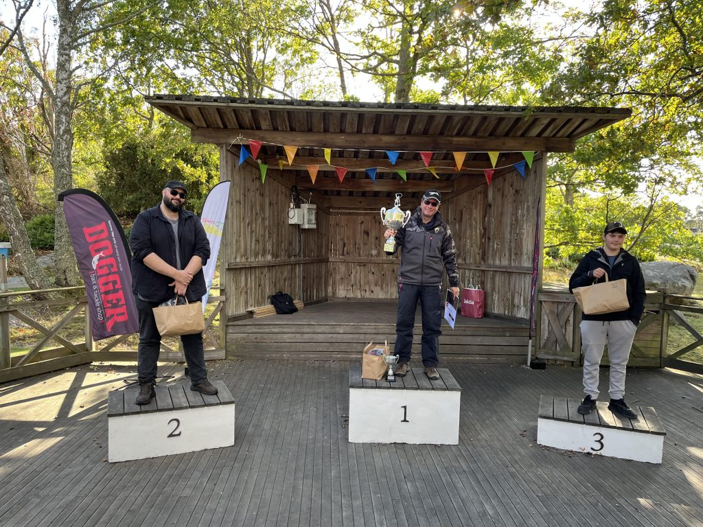

Mät & återutsätt
Fisken mäts nedåt till närmaste hela centimeter, fotograferas och släpps tillbaka. Varsam hantering är A och O.
26–27 september 2026
Sveriges största gäddfisketävling, i ordningens 27:e upplaga. Två dagar längs Blekingekusten – mät, fotografera, släpp tillbaka.
Arrangeras av Mieådalens Sportfiskeklubb

Om tävlingen
Gäddfestivalen har varit den största gäddfisketävlingen i Sverige. Under storhetstiden deltog som mest cirka 600 fiskare, och precis som nu utgick de från fyra olika startplatser längs Blekingekusten.
Gäddorna mäts, fotograferas och släpps sedan tillbaka i sitt rätta element. I den individuella tävlingen vinner den som fångar längsta gäddan ett vandringspris!
Fisken mäts nedåt till närmaste hela centimeter, fotograferas och släpps tillbaka. Varsam hantering är A och O.
Karlskrona, Listerby, Karlshamn och Sölvesborg — du kan avsluta på en annan plats än du startade.
Längsta gäddan individuellt ger årets Gäddkung eller Gädddrottning och vandringspriset.
Tävlingen följer Pike Guidelines Blekinge, Länsstyrelsens riktlinjer för tävlingsfiske.
Tävlingsregler
Kompletta regler publiceras på hemsidan före tävlingen — läs dem igen dagen innan start. Individuella regler · Teamregler
Anmälan 2026
Anmälan sker via Fishy, som administrerar tävlingen. 2025 var tävlingen inställd — i år är vi tillbaka med ordningens 27:e upplaga.
Kontakt
Blekinge Gäddfestival arrangeras av Mieådalens Sportfiskeklubb. Hör av dig — vi svarar gärna.